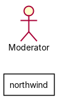
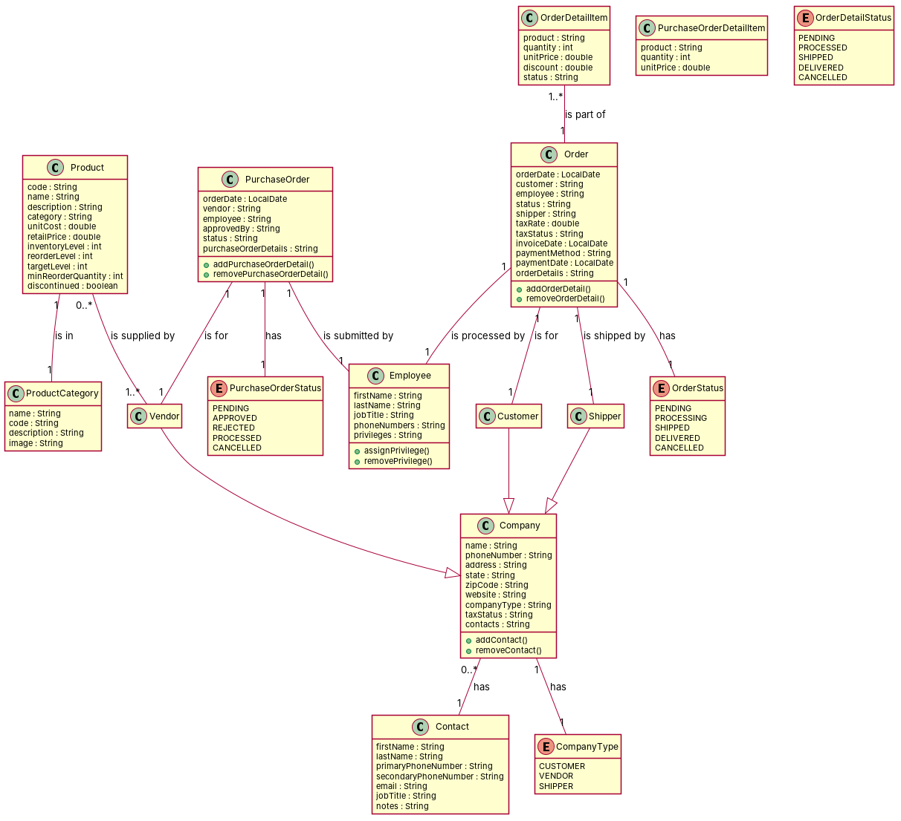

FR-CM-01: The system shall maintain records of external organizations classified as either Customers, Vendors, or Shippers. FR-CM-02: The system shall maintain the hierarchical relationship where Customers, Vendors, and Shippers are separate entities inheriting from Companies. FR-CM-03: The system shall record Company information including name, phone number, address details, state, zip code and website. FR-CM-04: The system shall assign each Company to exactly one company type. FR-CM-05: The system shall associate each company with exactly one geographic state. FR-CM-06: The system shall assign a standard Tax Status to each company. FR-CM-07: The system shall allow multiple Contacts to be associated with a single company. FR-CM-08: The system shall maintain Contacts including first name, last name, primary and secondary phone numbers, email address, job title, and notes for each company contact. FR-EM-01: The system shall maintain Employee records with personal information (first and last name, primary/secondary phone numbers) and professional information (job title, email). FR-EM-02: The system shall assign exactly one Title to each employee. FR-EM-03: The system shall support a hierarchical reporting structure where employees may report to one supervisor. FR-EM-04: The system shall allow one supervisor to manage multiple Employees. FR-EM-05: The system shall allow Employees to be assigned multiple privileges. FR-PM-01: The system shall maintain a Product catalog with product codes, names, descriptions, and pricing information. FR-PM-02: The system shall assign each product to exactly one Product Category. FR-PM-03: The system shall track standard unit cost and retail unit price for each product. FR-PM-04: The system shall monitor inventory levels including reorder level, target level, and minimum reorder quantity for each product. FR-PM-05: The system shall support marking products as discontinued. FR-PM-06: The system shall maintain Product Categories with names, codes, descriptions, and optional images. FR-PM-07: The system shall allow multiple Products to be supplied by multiple Vendors. FR-IM-01: The system shall support periodic Stock Takes to record and verify product inventory. FR-IM-02: The system shall record Stock Take information including date, product, quantity on hand, and expected quantity. FR-IM-03: The system shall calculate inventory discrepancies between expected and actual counts. FR-SOP-01: The system shall record Customer Orders with dates, customer information, and shipping details. FR-SOP-02: The system shall enforce that each Order must be associated with exactly one Customer. FR-SOP-03: The system shall assign each Order to exactly one Employee who processes it. FR-SOP-04: The system shall track the Order Status using predefined order status values. FR-SOP-05: The system shall assign exactly one Shipper to each Order. FR-SOP-06: The system shall calculate and record tax information including tax rate and Tax Status for each order. FR-SOP-07: The system shall record invoice date, payment method, and payment date for financial reconciliation. FR-SOP-08: The system shall require each Order to contain one or more Order Detail items. FR-SOP-09: The system shall track product, quantity, unit price, and discount for each Order Detail item. FR-SOP-10: The system shall assign a Status to each Order Detail item using predefined status values. FR-POP-01: The system shall manage Purchase Orders for acquiring products from Vendors. FR-POP-02: The system shall enforce that each Purchase Order must be associated with exactly one Vendor. FR-POP-03: The system shall record which Employee submitted each Purchase Order. FR-POP-04: The system shall record which Employee approved each Purchase Order. FR-POP-05: The system shall track the status of each Purchase Order using predefined Purchase Order Status values. FR-POP-06: The system shall record the order date for each Purchase Order. FR-POP-07: The system shall require each Purchase Order to contain one or more Purchase Order Detail items. FR-POP-08: The system shall track product, quantity, and unit price for each Purchase Order Detail item. FR-DA-01: The system shall record which Employee added each record and when it was added. FR-DA-02: The system shall record which Employee last modified each record and when it was modified.
Red, struck-through: removed by ambiguity removal; green: added.
| actors (2 → 1) |
|---|
| customer |
| employee |
| classes (23 → 17) |
|---|
| Company |
| Contact |
| Customer |
| Customers |
| Date |
| Employee |
| Entity |
| JobTitle |
| Order |
| OrderDetailItem |
| PhoneNumber |
| Product |
| PurchaseOrder |
| PurchaseOrderDetailItem |
| Quantity |
| Record |
| Shippers |
| State |
| Supervisor |
| TaxStatus |
| UnitPrice |
| Vendor |
| Vendors |
| attributes (1 → 1) |
|---|
| PurchaseOrder.status |
| relations (8 → 5) |
|---|
| association: Contact -> Company |
| association: Employee -> PurchaseOrder |
| association: Employee -> Record |
| association: Employee -> Supervisor |
| association: Order -> Customer |
| association: PurchaseOrder -> Vendor |
| generalization: Customers -> Entity |
| generalization: Shippers -> Entity |
| association: PurchaseOrder -> Company |
Enumerations added: Privilege {Read, Write, Admin}; TaxStatus {Exempt, Non-Exempt}
| id | req | type | cue | status | readings / explanation |
|---|---|---|---|---|---|
| A1 | FR-CM-01 | coordination | either/or | resolved | Customers, Vendors, or Shippers are mutually exclusive; Customers, Vendors, or Shippers are not mutually exclusive The use of 'either/or' suggests mutual exclusivity, but the context of the system might allow for overlap. |
| A2 | FR-CM-03 | incompleteness | information | resolved | The system shall record Company information including name, phone number, address details, state, zip code and website; The system shall record Company information including name, phone number, address details, state, zip code, and website The requirement is incomplete as it does not specify whether 'website' is included or not. |
| A3 | FR-CM-07 | quantifier | multiple | resolved | A single company can have multiple Contacts; A single company can have only one Contact The use of 'multiple' suggests that a company can have more than one contact, but the context might imply exclusivity. |
| A4 | FR-CM-08 | coordination | modifier scope: name | resolved | The system shall maintain Contacts including first name, last name, primary and secondary phone numbers, email address, job title, and notes for each company contact; The system shall maintain Contacts including first name, last name, primary and secondary phone numbers, email address, job title, and notes for each company contact, but not for each company The requirement is unclear whether the details are for each company contact or for each company. |
| A5 | FR-EM-01 | coordination | modifier scope: name | resolved | The system shall maintain Employee records with personal information (first and last name, primary/secondary phone numbers) and professional information (job title, email); The system shall maintain Employee records with personal information (first and last name, primary/secondary phone numbers) and professional information (job title, email) for each company The requirement is unclear whether the information is for each employee or for each company. |
| A7 | FR-EM-04 | quantifier | multiple | resolved | One supervisor can manage multiple Employees; One supervisor can manage only one Employee The use of 'multiple' suggests that a supervisor can manage more than one employee, but the context might imply exclusivity. |
| A8 | FR-EM-05 | quantifier | multiple | resolved | Employees can be assigned multiple privileges; Employees can be assigned only one privilege The use of 'multiple' suggests that an employee can have more than one privilege, but the context might imply exclusivity. |
| A9 | FR-PM-01 | incompleteness | information | resolved | The system shall maintain a Product catalog with product codes, names, descriptions, and pricing information; The system shall maintain a Product catalog with product codes, names, descriptions, pricing information, and additional details The requirement is incomplete as it does not specify whether additional details are included or not. |
| A10 | FR-PM-07 | quantifier | multiple | resolved | Multiple Products can be supplied by multiple Vendors; Multiple Products can be supplied by only one Vendor The use of 'multiple' suggests that multiple products can be supplied by multiple vendors, but the context might imply exclusivity. |
| A11 | FR-IM-02 | incompleteness | information | resolved | The system shall record Stock Take information including date, product, quantity on hand, and expected quantity; The system shall record Stock Take information including date, product, quantity on hand, expected quantity, and additional details The requirement is incomplete as it does not specify whether additional details are included or not. |
| A12 | FR-SOP-01 | incompleteness | information | resolved | The system shall record Customer Orders with dates, customer information, and shipping details; The system shall record Customer Orders with dates, customer information, shipping details, and additional details The requirement is incomplete as it does not specify whether additional details are included or not. |
| A13 | FR-SOP-06 | incompleteness | information | resolved | The system shall calculate and record tax information including tax rate and Tax Status for each order; The system shall calculate and record tax information including tax rate, Tax Status, and additional details for each order The requirement is incomplete as it does not specify whether additional details are included or not. |
| A14 | FR-SOP-08 | quantifier | one or more | resolved | Each Order must contain one or more Order Detail items; Each Order can contain zero or more Order Detail items The use of 'one or more' suggests that an order must contain at least one detail item, but the context might imply that an order can be empty. |
| A15 | FR-POP-07 | quantifier | one or more | resolved | Each Purchase Order must contain one or more Purchase Order Detail items; Each Purchase Order can contain zero or more Purchase Order Detail items The use of 'one or more' suggests that a purchase order must contain at least one detail item, but the context might imply that a purchase order can be empty. |
| A16 | FR-DA-01 | referential | it | resolved | The system shall record which Employee added each record and when it was added; The system shall record which Employee last modified each record and when it was modified The use of 'added' and 'modified' suggests that the system records the addition and modification of records, but the context might imply that only one of these actions is recorded. |
| A17 | FR-DA-01 | actor | passive 'added' without agent | resolved | The system shall record which Employee added each record and when it was added; The system shall record which Employee last modified each record and when it was modified The use of 'added' and 'modified' suggests that the system records the addition and modification of records, but the context might imply that only one of these actions is recorded. |
| A18 | FR-DA-02 | actor | it | resolved | The system shall record which Employee added each record and when it was added; The system shall record which Employee last modified each record and when it was modified The use of 'added' and 'modified' suggests that the system records the addition and modification of records, but the context might imply that only one of these actions is recorded. |


"""Code skeleton generated from the shared model of D4/northwind.
Every class and method records the requirement(s) it traces to."""
from __future__ import annotations
import dataclasses as _dc
import enum as _enum
import typing as _t
@_dc.dataclass
class Company:
"""Source: FR-CM-01, FR-CM-02, FR-CM-03, FR-CM-04, FR-CM-05, FR-CM-06"""
name: _t.Optional[str] = None
phoneNumber: _t.Optional[str] = None
address: _t.Optional[str] = None
state: _t.Optional[str] = None
zipCode: _t.Optional[str] = None
website: _t.Optional[str] = None
companyType: _t.Optional[str] = None
taxStatus: _t.Optional[str] = None
contacts: _t.Optional[str] = None
contact: _t.Optional["Contact"] = None
def addContact(self) -> None:
"""Operation."""
raise NotImplementedError
def removeContact(self) -> None:
"""Operation."""
raise NotImplementedError
@_dc.dataclass
class Contact:
"""Source: FR-CM-07"""
firstName: _t.Optional[str] = None
lastName: _t.Optional[str] = None
primaryPhoneNumber: _t.Optional[str] = None
secondaryPhoneNumber: _t.Optional[str] = None
email: _t.Optional[str] = None
jobTitle: _t.Optional[str] = None
notes: _t.Optional[str] = None
@_dc.dataclass
class Customer(Company):
"""Source: FR-CM-01"""
pass
@_dc.dataclass
class Vendor(Company):
"""Source: FR-CM-01"""
pass
@_dc.dataclass
class Shipper(Company):
"""Source: FR-CM-01"""
pass
@_dc.dataclass
class Employee:
"""Source: FR-EM-01, FR-EM-02, FR-EM-03, FR-EM-04, FR-EM-05"""
firstName: _t.Optional[str] = None
lastName: _t.Optional[str] = None
jobTitle: _t.Optional[str] = None
phoneNumbers: _t.Optional[str] = None
privileges: _t.Optional[str] = None
def assignPrivilege(self) -> None:
"""Operation."""
raise NotImplementedError
def removePrivilege(self) -> None:
"""Operation."""
raise NotImplementedError
@_dc.dataclass
class Order:
"""Source: FR-SOP-01, FR-SOP-02, FR-SOP-03, FR-SOP-04, FR-SOP-05, FR-SOP-06, FR-SOP-07, FR-SOP-08, FR-SOP-09, FR-SOP-10"""
orderDate: _t.Optional[str] = None
customer: _t.Optional[str] = None
employee: _t.Optional[str] = None
status: _t.Optional[str] = None
shipper: _t.Optional[str] = None
taxRate: _t.Optional[float] = None
taxStatus: _t.Optional[str] = None
invoiceDate: _t.Optional[str] = None
paymentMethod: _t.Optional[str] = None
paymentDate: _t.Optional[str] = None
orderDetails: _t.Optional[str] = None
orderStatus: _t.Optional["OrderStatus"] = None
def addOrderDetail(self) -> None:
"""Operation."""
raise NotImplementedError
def removeOrderDetail(self) -> None:
"""Operation."""
raise NotImplementedError
@_dc.dataclass
class OrderDetailItem:
"""Source: FR-SOP-08, FR-SOP-09, FR-SOP-10"""
product: _t.Optional[str] = None
quantity: _t.Optional[int] = None
unitPrice: _t.Optional[float] = None
discount: _t.Optional[float] = None
status: _t.Optional[str] = None
order: _t.Optional["Order"] = None
@_dc.dataclass
class Product:
"""Source: FR-PM-01, FR-PM-02, FR-PM-03, FR-PM-04, FR-PM-05, FR-PM-06, FR-PM-07"""
code: _t.Optional[str] = None
name: _t.Optional[str] = None
description: _t.Optional[str] = None
category: _t.Optional[str] = None
unitCost: _t.Optional[float] = None
retailPrice: _t.Optional[float] = None
inventoryLevel: _t.Optional[int] = None
reorderLevel: _t.Optional[int] = None
targetLevel: _t.Optional[int] = None
minReorderQuantity: _t.Optional[int] = None
discontinued: _t.Optional[bool] = None
productCategory: _t.Optional["ProductCategory"] = None
vendors: _t.List["Vendor"] = _dc.field(default_factory=list)
@_dc.dataclass
class PurchaseOrder:
"""Source: FR-POP-01, FR-POP-02, FR-POP-03, FR-POP-04, FR-POP-05, FR-POP-06, FR-POP-07, FR-POP-08"""
orderDate: _t.Optional[str] = None
vendor: _t.Optional[str] = None
employee: _t.Optional[str] = None
approvedBy: _t.Optional[str] = None
status: _t.Optional[str] = None
purchaseOrderDetails: _t.Optional[str] = None
purchaseOrderStatus: _t.Optional["PurchaseOrderStatus"] = None
def addPurchaseOrderDetail(self) -> None:
"""Operation."""
raise NotImplementedError
def removePurchaseOrderDetail(self) -> None:
"""Operation."""
raise NotImplementedError
@_dc.dataclass
class PurchaseOrderDetailItem:
"""Source: FR-POP-07, FR-POP-08"""
product: _t.Optional[str] = None
quantity: _t.Optional[int] = None
unitPrice: _t.Optional[float] = None
@_dc.dataclass
class ProductCategory:
"""Source: FR-PM-06"""
name: _t.Optional[str] = None
code: _t.Optional[str] = None
description: _t.Optional[str] = None
image: _t.Optional[str] = None
class CompanyType(_enum.Enum):
"""Source: -"""
CUSTOMER = "CUSTOMER"
VENDOR = "VENDOR"
SHIPPER = "SHIPPER"
class OrderStatus(_enum.Enum):
"""Source: -"""
PENDING = "PENDING"
PROCESSING = "PROCESSING"
SHIPPED = "SHIPPED"
DELIVERED = "DELIVERED"
CANCELLED = "CANCELLED"
class PurchaseOrderStatus(_enum.Enum):
"""Source: -"""
PENDING = "PENDING"
APPROVED = "APPROVED"
REJECTED = "REJECTED"
PROCESSED = "PROCESSED"
CANCELLED = "CANCELLED"
class OrderDetailStatus(_enum.Enum):
"""Source: -"""
PENDING = "PENDING"
PROCESSED = "PROCESSED"
SHIPPED = "SHIPPED"
DELIVERED = "DELIVERED"
CANCELLED = "CANCELLED"
| python_compiles | True |
|---|---|
| java_compiles | True |
| attribute_mismatches | 0 |
| method_mismatches | 0 |
| use_cases | 0 |
| use_cases_without_actor | 0 |
| use_cases_without_method | 0 |
| actors_without_use_case | 1 |
| relations_to_unknown_class | 0 |
| inconsistencies | 1 |
| inconsistency_rate | 0.0588 |
| requirement_coverage | 0.8605 |
| validator fixes | |
| assumptions for open ambiguities | [{"tag": "A3", "assumption": "The model assumes that the Order class has an attribute for customer, employee, and shipper, and the PurchaseOrder class has an attribute for vendor, employee, and status, based on the use cases provided."}] |
| element | P | R | F1 | TP/FP/FN |
|---|---|---|---|---|
| classes | 0.5 | 0.381 | 0.432 | 8/8/13 |
| attributes | 0.372 | 0.216 | 0.274 | 16/27/58 |
| relations | 0.533 | 0.308 | 0.39 | 8/7/18 |